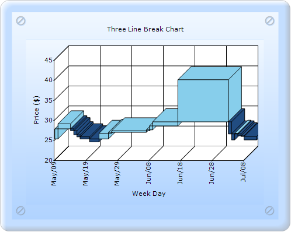

To create Axis Range and Intervals by using any chart through Builder:
1. In Controller, return view to the corresponding View page.
|
[C#] public ActionResult SimpleChart() { return View(); }
|
2. In the View page, invoke the ChartBuilder by using the control ID as the first argument.
3. Add the Series to the ChartModel and set the series type to ThreeLineBreak, and add the Points to the series and set the style.
4. Set the ChartModel and ChartArea properties.
|
View [ASPX]
<% double[] points1 = { 25.250,27.750,29.000,28.275,27.750,27.750,27.275,26.250,25.750,25.250,26.250,25.250,24.500, 25.625,25.500,26.625,26.275,26.250,26.875,27.250,26.875,26.500,27.125,26.275,25.875,26.625, 27.125,26.250,27.000,27.250,27.500,28.500,29.500,28.875,28.500,29.000,28.500,28.500,29.000, 29.000,40.000,29.875,29.875,28.875,28.500,28.250,28.875,29.275,29.275,29.750,29.500,29.275, 28.500,27.750,27.625,27.500,26.500,25.000,26.625,26.000,25.875,25.000,25.250,25.125,25.050};
DateTime current = DateTime.Today.AddDays(-points1.Length);
%> <%=Html.Chart("chart_Model").Text("Three Line Break Chart") //-------------- Addthe Series, add the points to the series and set some stylings you want to the series ------------------ .PrimaryXAxis(xaxis => {
xaxis.Title("Week Day") .ValueType(Syncfusion.Windows.Forms.Chart.ChartValueType.DateTime) .DateTimeFormat("MMM/dd") .DateTimeRange(new Syncfusion.Windows.Forms.Chart.ChartDateTimeRange(current, current.AddDays(60), 10, Syncfusion.Windows.Forms.Chart.ChartDateTimeIntervalType.Days)) .IntervalType(Syncfusion.Windows.Forms.Chart.ChartDateTimeIntervalType.Months) .LabelRotate(true) .LabelRotateAngle(270); }).PrimaryYAxis(yaxis => { yaxis.Title("Price ($)"); }) //------------- Set the required properties to chartmodel to set skin, size, legend visibility and so on ------------------------
%> |
|
View [cshtml]
@{ double[] points1 = { 25.250,27.750,29.000,28.275,27.750,27.750,27.275,26.250,25.750,25.250,26.250,25.250,24.500, 25.625,25.500,26.625,26.275,26.250,26.875,27.250,26.875,26.500,27.125,26.275,25.875,26.625, 27.125,26.250,27.000,27.250,27.500,28.500,29.500,28.875,28.500,29.000,28.500,28.500,29.000, 29.000,40.000,29.875,29.875,28.875,28.500,28.250,28.875,29.275,29.275,29.750,29.500,29.275, 28.500,27.750,27.625,27.500,26.500,25.000,26.625,26.000,25.875,25.000,25.250,25.125,25.050}; DateTime current = DateTime.Today.AddDays(-points1.Length); } @{ Html.Chart("chart_Model").Text("Three Line Break Chart") //-------------- Addthe Series, add the points to the series and set some stylings you want to the series ------------------ .PrimaryXAxis(xaxis => { xaxis.Title("Week Day") .ValueType(Syncfusion.Windows.Forms.Chart.ChartValueType.DateTime) .DateTimeFormat("MMM/dd") .DateTimeRange(new Syncfusion.Windows.Forms.Chart.ChartDateTimeRange(current, current.AddDays(60), 10, Syncfusion.Windows.Forms.Chart.ChartDateTimeIntervalType.Days)) .IntervalType(Syncfusion.Windows.Forms.Chart.ChartDateTimeIntervalType.Months) .LabelRotate(true) .LabelRotateAngle(270); }).PrimaryYAxis(yaxis => { yaxis.Title("Price ($)"); }).Render(); //------------- Set the required properties to chartmodel to set skin, size, legend visibility and so on ------------------------ } |
5. Build and run the application, to get the following output:

Figure 265: Chart displaying Three Line Break chart Series